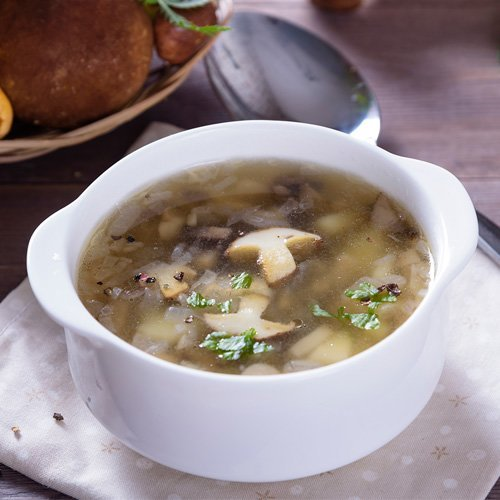
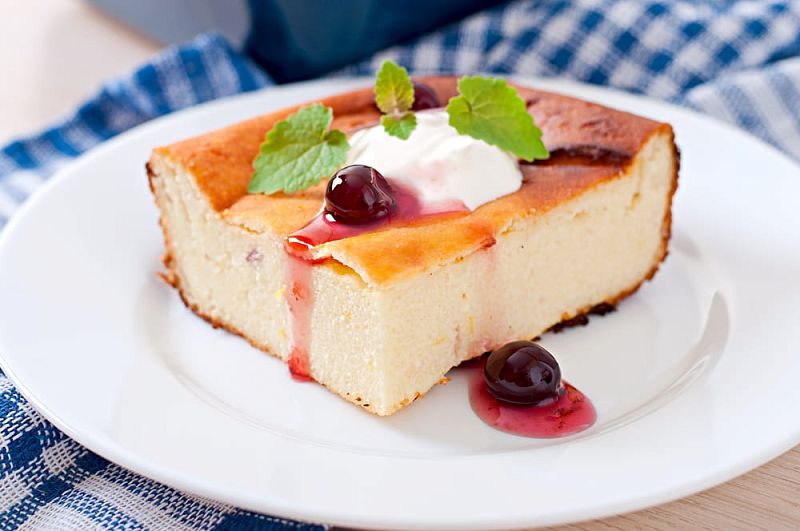

| Название блюда | Оценка | Ссылка на рецепт | Фото блюда |
|---|---|---|---|
| Жареная картошка | 0 | Рецепт | |
| Грибной суп | 0 | Рецепт |  |
| Пельмени | 0 | Рецепт | |
| Творожная запеканка | 0 | Рецепт |  |
| Стейк из говядины | 0 | Рецепт | |